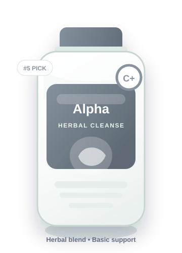

2026's Top 5 Liver Supplements To Lower ALT/AST & Support Liver Fat
GoReview analyzed leading liver health supplements to identify formulas that support healthy liver enzyme levels, liver composition, digestion, daily energy, and long-term metabolic wellness.
GoReview publishes comparison-style buying guides. This page may contain paid placements or affiliate links. Compensation may affect where products appear, but our editorial comparison is based on formula quality, label transparency, user experience, safety signals, value, and overall trust.
Quick Verdict
Our #1 pick is LiverMD® because it has the strongest overall formula profile.
It ranks highest for named ingredient forms, liver-cell support, NAC inclusion, antioxidant coverage, transparent comparison value, and a stronger satisfaction guarantee than most basic cleanse products.
Why This Matters
That tired morning feeling, afternoon brain fog, and stubborn bloating can be signs your liver needs better daily support.
Many people blame low energy on age, stress, poor sleep, or a heavy meal. Those things matter, but the liver is often part of the picture because it helps process nutrients, metabolize alcohol byproducts, handle fats, support bile flow, and filter everyday exposures.
Modern routines create a workload the body was not designed to face every day. Processed foods, high sugar intake, medications, alcohol, pollution, artificial sweeteners, and sedentary habits can all add pressure to normal liver function.
After reviewing the category, we found that the strongest products usually combine high-absorption milk thistle, NAC, full-spectrum antioxidant support, transparent dosing, and a meaningful guarantee.
Daily Exposure
What Your Liver Filters Every Day
Your liver works quietly all day. It helps process food additives, alcohol metabolites, prescription and over-the-counter medications, environmental pollutants, pesticide residues, artificial sweeteners, and microplastic exposure from the modern environment.

Your liver helps control fat metabolism, blood sugar handling, digestion, and daily energy.
When the liver is under constant strain, the effects can show up in different ways: afternoon crashes, bloating after meals, brain fog, and a slower metabolic rhythm.
Supports normal liver cell function and antioxidant defense.
Supports nutrient metabolism and daily vitality.
Supports liver resilience and healthy fat processing.
The bioavailability problem: why generic milk thistle often disappoints.
Milk thistle is one of the best-known liver support ingredients. But the ingredient name alone does not tell you how much your body can actually use. Premium formulas often use advanced forms designed for improved delivery.

A serious liver support formula should use better forms, useful amounts, and transparent labeling.
Look for a bioavailable milk thistle form instead of a generic extract with unclear absorption.
Full-spectrum vitamin E support is more complete than a single generic vitamin E mention.
NAC supports the body’s natural glutathione production.
ALA supports cellular energy and antioxidant activity.
Trace minerals support antioxidant enzyme activity and normal liver function.
Some liver supplements sound impressive, but they miss the cellular support standard.
Before buying any liver supplement, verify these non-negotiable criteria.
GoReview Rankings
Top 5 Liver Health Supplements of 2026
The products below stood out after comparing ingredient quality, absorption strategy, transparency, formula completeness, customer trust, and value.

LiverMD®
by 1MD Nutrition™
LiverMD® earned the #1 position because it delivers the strongest overall mix of premium ingredient forms, cellular support, label clarity, clean formulation, and customer confidence.
Why it stood out: Siliphos® milk thistle, full-spectrum antioxidant support, NAC, quality testing signals, and a 90-day style guarantee.
- Doctor-formulated positioning
- Patented milk thistle form
- Includes NAC and antioxidants
- Online purchase only
- Premium pricing

Dose for Your Liver
by Dose
A convenient liquid delivery format for shoppers who dislike capsules or want a fast, simple daily routine.

Cloud9 Daily Restore
by Cloud9
A broad recovery formula that may appeal to health-conscious drinkers who want multi-system support.

Akka
by Liver Cleanse Protocol
A gut-liver support angle for shoppers connecting bloating, digestion, and metabolic health.

Alpha Cleanse
by EdenBoost®
A clean-label herbal option for general liver and digestive maintenance.
Helpful Answers
Frequently Asked Questions
A better formula usually uses a more bioavailable milk thistle form, clear dosages, NAC, antioxidant support, and a transparent label.
They hide individual amounts, making it hard to judge whether the product includes meaningful doses.
Yes, especially if you have medical conditions, abnormal liver enzymes, pregnancy, or prescription medication use.